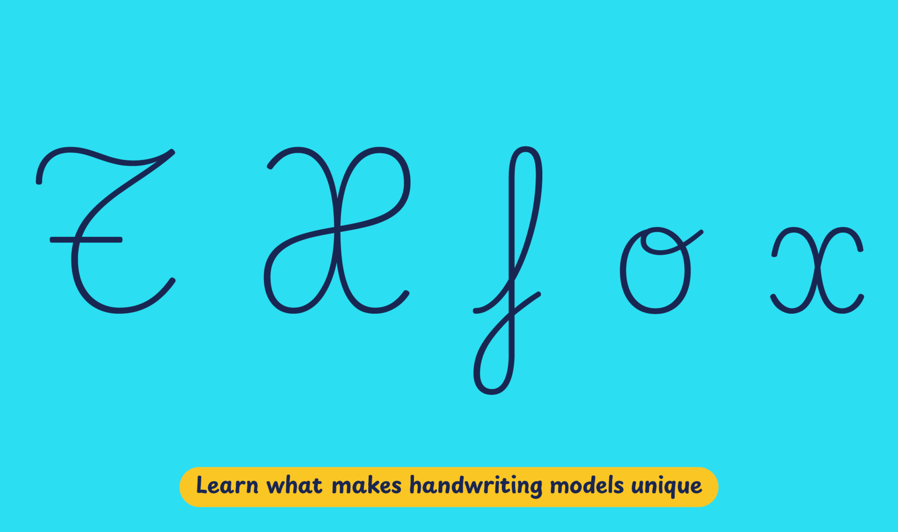

Primary school handwriting in Spain features letters that are cursive from a structural standpoint but have no slant. These upright cursive letters are either taught in the form of a hybrid style, which uses joined cursive lowercase letters with unjoined simplified print uppercase, or as a fully cursive style, which features ornate, and more traditional and decorative uppercase letters. The hybrid style is used in textbooks by major educational publishers, such as Cuadernos Rubio, Santillana Educación, Editorial Barcanova, and Tekman Education.
Playwrite España Decorativa is a variable font with a weight range from Thin (100) to Regular (400), and supports over 150 Latin-based languages.
To contribute, see github.com/TypeTogether/Playwrite.
This continuous cursive is influenced by traditional French models and features medium-length ascenders and descenders with loops. Several lowercase letters begin with curved entry strokes, and some incorporate knots. The 'z' is uniquely styled in italic fashion, which stands out in this script. In contrast to its more simplified sibling, this model boasts cursive-style capital letters. Notably, the 'X' includes a double knot, and the 'T' is distinguished by a decorative crossbar.

Playwrite España Decorativa appears in font menus with a two-letter country
code ‘ES’ and a the ‘Deco’ abbreviation, Playwrite ES Deco. It
features four styles: Thin, ExtraLight, Light, and Regular.
The download .zip file includes the variable font and standard static ttf fonts
for each style.
The Playwrite school fonts are based on the findings of Primarium, a groundbreaking educational effort that documents the history and current practice of handwriting models taught to primary school students worldwide. This typographic engine serves teachers, educators, and parents by generating localized libre fonts. These Playwrite fonts are complemented by Playpen Sans, an informal and fun typeface designed for annotations, instructions, and student notes – that also includes emojis.
For more information about the Primarium project, visit primarium.info and to learn more about handwriting education in Spain, see primarium.info/countries/spain.
Windows: Download the font file to your computer. Navigate to where you saved the font file and double-click it to open. Click the "Install" button at the top of the font preview window. The font is now installed and ready to be used across your apps.
macOS: After downloading the font file to your Mac, right-click it in Finder and select "Open With" > "Font Book". Then, click "Install Font" in the font preview window that pops up. The font is now installed and ready to be used across your apps.
The Playwrite font family uses complex OpenType features to generate connected writing. Some common applications require these features to be manually activated.
Note: This font family doesn't include Bold or Italic styles, so please avoid applying them in text editors. If you use the common 'B' and 'I' buttons, you will automatically generate low-quality styles.
Google Docs and Slides: From the font selector drop-down, go to "More Fonts" and search for the desired font name, in this case, "Playwrite ES Deco", and click OK. If some text is already selected, the font choice will apply.
Microsoft Word: Go to Format in the Menu bar, select Font, and then the Advanced tab. Activate "Contextual Alternates" and "Kerning for fonts below" to apply these settings to all text sizes.
LibreOffice: In macOS, to select the different styles, go to Format in the Menu bar, select Character, and use the Typeface menu.
Adobe InDesign: Open the Paragraph Panel and select Adobe "World-Ready Paragraph Composer" from the contextual menu.
Adobe Illustrator: Navigate to Preferences > Type, check the "Show Indic Options" box, and close preferences. Then open the Paragraph Panel and select "Middle Eastern Composer" from the contextual menu.
Adobe Photoshop: Access the Paragraph Panel, then choose "World-Ready Layout" from the contextual menu.
The above instructions are also available in PDF format here.